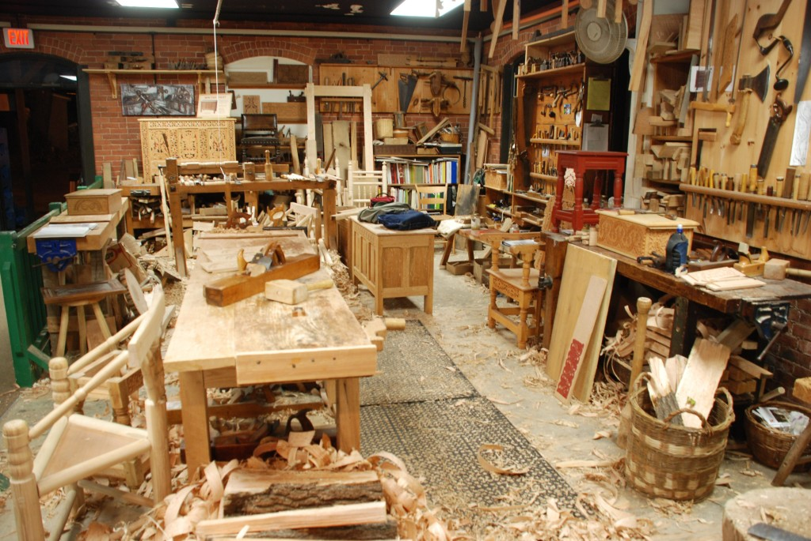

Trại mộc Mộc Phúc (địa chỉ số 40 Ngọc Sơn, Vũng Đình, Hòn Nghê, Nha Trang, Khánh Hòa) là một trong những doanh nghiệp nhận làm đồ nội thất bằng gỗ như bàn, ghế, giường, tủ, cầu thang,… ở Nha Trang, Khánh Hòa. Chủ của doanh nghiệp là ông Phúc. Trước đây, ông đã đi theo học nghề mộc tại chỗ một người quen, sau đó tách ra làm riêng. Lúc đầu chỉ bắt đầu làm tại sân trước nhà của ông. Sau một thời gian hoạt động thì đã có một trại mộc riêng. Tính đến nay doanh nghiệp đã hoạt động gần 17 năm.
Mộc Phúc luôn tự hào và tự tin về năng lực của mình để đem đến cho khách hàng những sản phẩm đẹp, chất lượng, đáp ứng công năng sử dụng với chi phí hợp lý. Để đáp ứng được những sản phẩm đòi hỏi tiêu chuẩn kỹ thuật cao, Mộc Phúc liên tục nâng cao năng lực chuyện môn. Bên cạnh đó, trại mộc đã xây dựng được văn hóa làm việc với môi trường thuận lợi, trọng dụng những người có năng lực, phát huy tối đa sự độc lập và sáng tạo của từng nhân viên, hướng đến mục tiêu xây dựng trại mộc lớn mạnh và phát triển bền vững.
Năng lực thiết kế và thi công của Mộc Phúc hiện có trang bị những công cụ hiện đại. Chúng tôi cam kết luôn xây dựng và phát triển trại mộc gắn chặt với mục tiêu chất lượng là số 1 và sự hài lòng của khách hàng là mục tiêu duy nhất.
Cảm ơn quý vị đã quan tâm đến sản phẩm của Mộc Phúc. Hân hạnh được hợp tác và phục vụ quý vị.
Trân trọng!